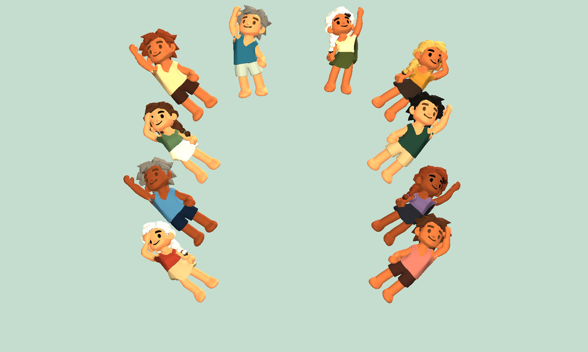

游戏宣传插画 · 非实机画面
游戏宣传插画 · 非实机画面海岛聚落：篝火纪事
采集、搬运、开垦与建造。你规划的不只是聚落的模样，更是岛民们的一日三餐、安稳睡眠，以及篝火旁的好心情。
A GAME BY THREE STUDIO
一座小岛，围着篝火慢慢成家。
OUR FIRST WORLD / 01
从十位漂流者和一堆篝火开始，
让荒岛渐渐有了家的样子。
游戏宣传插画 · 非实机画面采集、搬运、开垦与建造。你规划的不只是聚落的模样，更是岛民们的一日三餐、安稳睡眠，以及篝火旁的好心情。
因地制宜地安放木屋、农田、仓库与饭馆。给居民留出通路，让每一份物资都有去处。
安排职业分工，关注饥饿、体力、健康与心情。看居民亲自采集、搬运、工作和休息。
看昼夜与晴雨变换，看草地踩出小路。放慢节奏，或打开拍照模式，收藏一刻海岛风景。

DEVELOPMENT JOURNAL
我们希望做一款能看见岛上生活慢慢发生的经营游戏：居民走路、采集、搬运，仓库里的物资变成饭馆中的餐食，木屋和篝火让荒岛渐渐有了家的样子。
你可以认真规划每一片土地，也可以安静欣赏森林、缓丘和海岸。愿每次回到篝火旁，都能看见一点新的变化。
先建仓库，安排伐木和采摘，再建饭馆并安排厨师。随后补足木屋与食物来源，逐渐照顾好居民的温饱和日常需求。
建造时记得给大家留出通路。吃饭、睡觉和就诊，都需要居民真正走到相应的地方。
游戏仍在持续迭代。我们会继续打磨手机操作、场景表现、经营反馈与游玩平衡，让小岛生活变得更自然，也让每一次操作更顺手。
本页展示游戏内容与开发中的画面，不提供游戏下载或在线游玩入口。后续公开入口确定后，将在这里更新。
SEE YOU BY THE CAMPFIRE